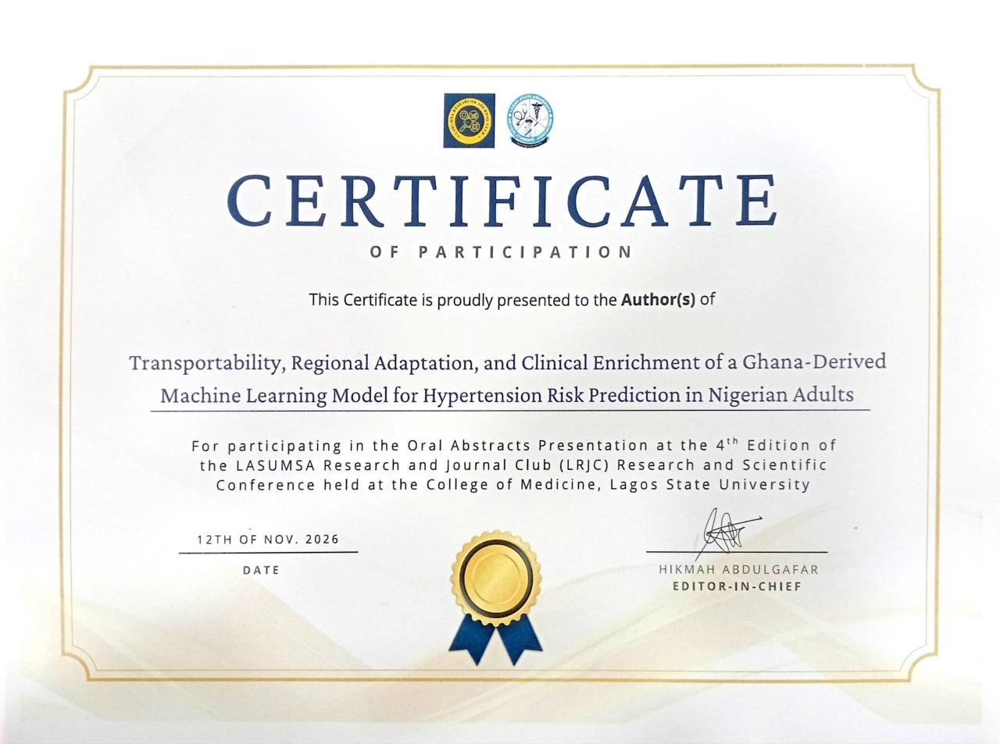

Transportability, Regional Adaptation, and Clinical Enrichment of a Ghana-Derived Machine Learning Model for Hypertension Risk Prediction in Nigerian Adults
Examined the external transportability of a Ghana-derived hypertension prediction model in Nigerian adults, alongside regional adaptation and clinical enrichment.
